Industry experience. Working software. Playable worlds.
Three ways I turn practical problems and creative ideas into something you can use.
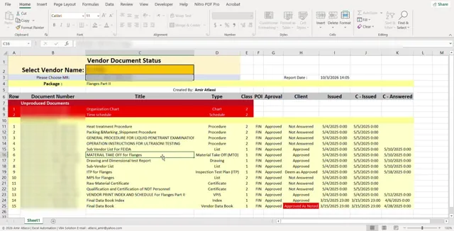
Less reporting. More doing.
Excel VBA tools that turn an hour of manual reporting into seconds.
Watch the workflowSmall wings. A greater purpose.
A journey across changing landscapes, with a single letter to deliver and a destination worth reaching.
Explore Atlas Bird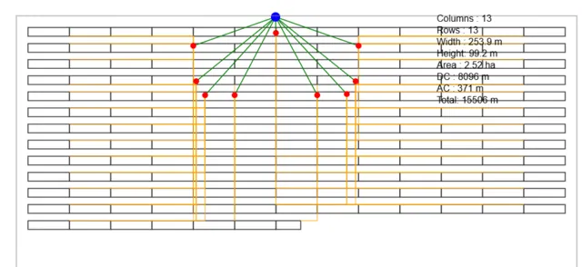
Find a better cable layout.
A JavaScript optimizer balancing AC and DC cable costs for solar plants.
See how it worksFrom the construction site to petrochemical EPC
A career built on coordination, procurement and document control, with a habit of automating whatever is repetitive.
Project Coordinator & Expeditor
Jahanpars EPCC · Bushehr Petrochemical Complex (BUPC) · 2020 – Present- Coordinate engineering, procurement and construction disciplines; expedite vendor purchases and inspect vendor progress during production.
- Head of the ERP section for procurement documents in IFS; handle vendor final data books in the document control section.
- Built the VBA tools for document control and procurement tracking shown below.
Project Manager
Abniyeh Sazan · Luxury villa project · 2016 – 2020- Managed documents, contractors, quantity surveying, MTO/BOQ, purchasing and CPM progress control.
Construction Site Manager
Residential projects (20 to 40 units) · 2006 – 2016- Site supervision, budgets, progress control and contractor invoicing across several projects.
Education: MBA (Payame Noor University) · B.Sc. Industrial Engineering (K.N. Toosi University of Technology)
Document control, automated
Excel VBA tools I wrote for the BUPC project. A report that took at least an hour by hand now takes a few seconds, and manual errors are practically gone, even when the user is a beginner.
Vendor Document Status
From scattered vendor records to a ready-to-share report.
How it works
Pick a vendor and a material requisition, and the tool gathers every vendor document with its class, approval status, client status and dates. One click exports a PDF or Excel report, lists the documents still missing, and builds a summary. Press play to watch it work.
Final Book Follow-Up
A clear action history for every vendor package.
How it works
Create a dedicated Excel sheet for each vendor MR and keep the DCC contact details close. Log actions with an automatic date, time and row number, review the history, and continue outstanding work. Dashboard hyperlinks connect every purchase package to its tracking sheet, from preparation to finalization. Press play to see the workflow.
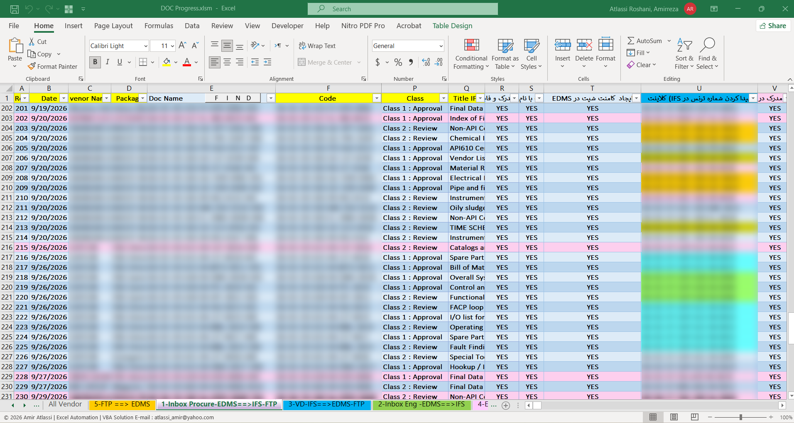
Document progress tracker
See where each document stands across EDMS, IFS and FTP.
How it works
Follows every document through the EDMS, IFS and FTP workflow across separate sheets, so nobody has to check and copy things by hand. At any moment you can see exactly where a document stands.
Vendor names, document numbers and project references are blurred in the progress screenshot and Vendor Document Status video. In the Final Book Follow-Up video, only the MR numbers in column D of the main dashboard are blurred.
Games I build for fun
A mobile game in Godot, a browser game in plain JavaScript, and a collection of games that run inside Excel, because a spreadsheet can be a lot more than a spreadsheet.
Atlas Bird
Small wings.
A greater purpose.
A single letter sets an extraordinary journey in motion. Follow a determined messenger through sweeping landscapes, unfamiliar skies and changing weather. Beyond every horizon lies another world to discover—and another stretch of the journey that stands between the message and its destination.
A glimpse of the journey
Scroll to exploreBrick-Out · playable right here
Brick-Out
A classic brick breaker written in plain JavaScript and HTML5 Canvas, with no libraries. 98 levels from easy to brutal, power-ups (lasers, fire ball, slow motion, multi-ball), combos, high scores, and touch controls for phones.
Steer with the mouse or drag your finger. Sound effects by Kenney (CC0).
Excel. After hours.
Five familiar games. One unexpected canvas.
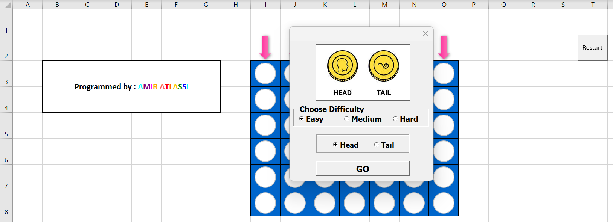
Connect Four
Take on the computer at Easy, Medium or Hard, with a coin toss deciding who drops the first disc. Fair warning: on Hard, if the computer starts, you can't beat it.
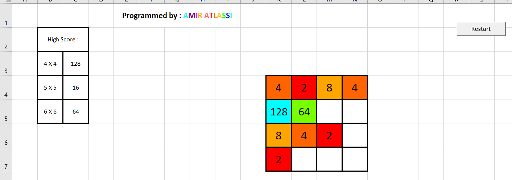
2048
The addictive tile-merging game on 4×4, 5×5 and 6×6 boards, each with its own high score.
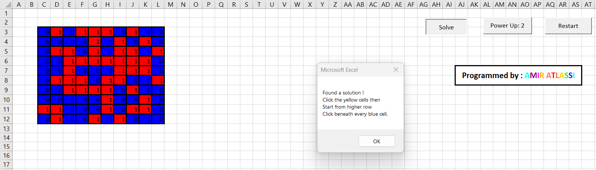
Lights Out
A puzzle with power-ups and a built-in solver. It can take you ages to crack a board; the computer solves it instantly.
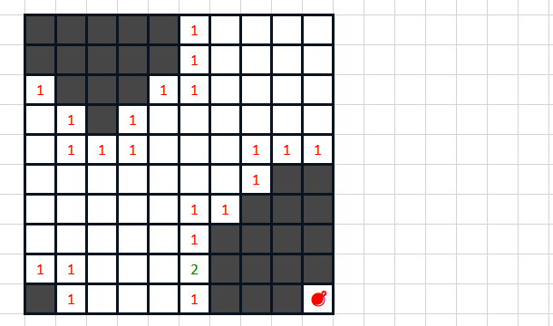
Minesweeper
The classic mine hunt with live counters for bombs and unrevealed cells, plus a Protection counter.
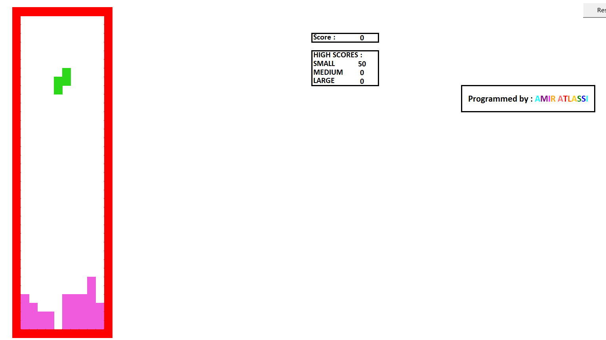
Tetris
Falling blocks on three board sizes, each with its own high score. Making this work inside a spreadsheet was a real challenge, and I loved every minute of it.
Solar plant cable optimizer
A JavaScript tool that finds the cheapest cable layout for a solar power plant.
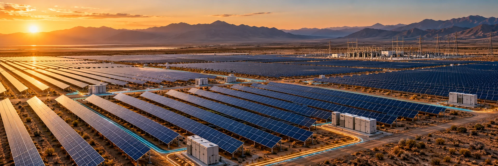
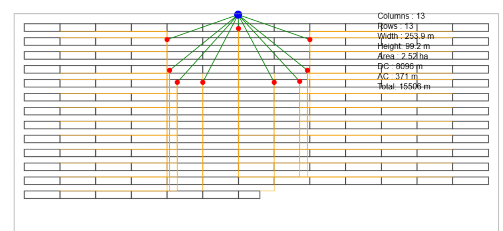
Where should the inverters go?
Thick AC cable runs from the inverters to the substation, while thin DC cable runs from the panels to the inverters. Put the inverters near the substation and you save on expensive AC cable but need longer DC runs; put them near the panels and it flips. The right balance depends on real cable prices, so the tool calculates it for you.
- You enter: plant capacity, inverter type, panel layout, spacing and tilt angle, AC and DC cable prices and more.
- It finds: the layout with the lowest total cable cost.
- It also calculates: the land area under the panels and the quantities for each cable type.
- It exports: a DXF file ready to open in AutoCAD.
Also in my toolbox: MetaTrader Expert Advisors in MQL5 and many small Python programs.
What I bring
Hands-on project experience, backed by real programming skills.
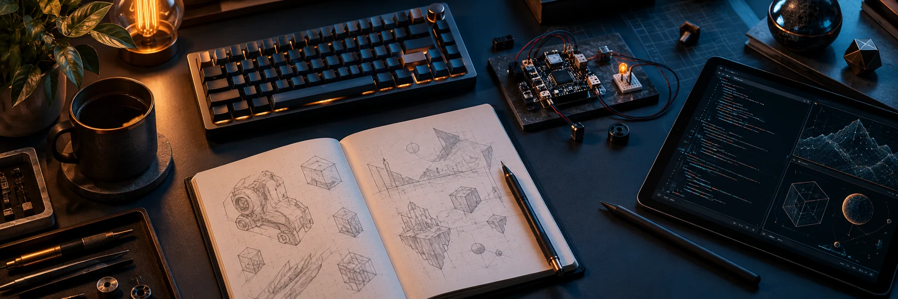
Programming
Project & systems
Languages
- Persian: native
- English: IELTS 7.0
- French: B1
- Basic Turkish and German
Certificates
- Elements of AI, University of Helsinki
- Pandas, Kaggle
- Intro to Machine Learning, Kaggle
Let’s build
what comes next.
I'm open to international opportunities in project coordination, document control, project controls and automation.